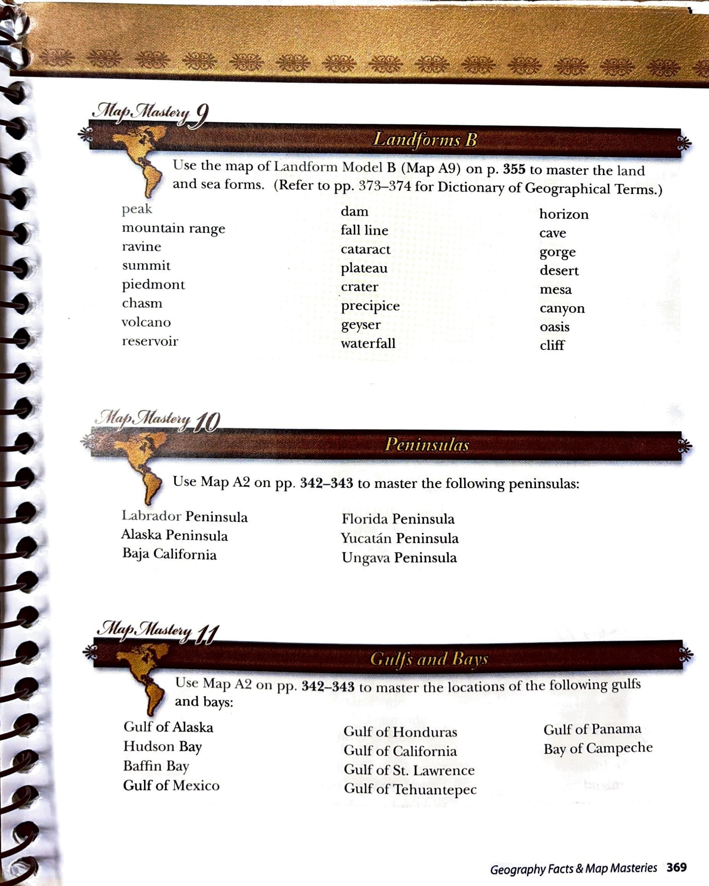

Map Mastery 10 · Peninsulas
Map Mastery 10 · Peninsulas
Use Map A2 on pp. 342–343 to master the following peninsulas:
Peninsulas
- Labrador Peninsula
- Alaska Peninsula
- Baja California
- Florida Peninsula
- Yucatán Peninsula
- Ungava Peninsula
Multiple-choice practice
Use the study list and linked Atlas map to choose your answers. These questions are an adaptation for Harlan; they are not printed questions from the source.
Original source page 369
Location names, headings and instructions were compared with the supplied source page. Source-era classifications are preserved. Pronunciation-guide glyphs remain in the original image and are not transcribed into the list.
Open full-size source page